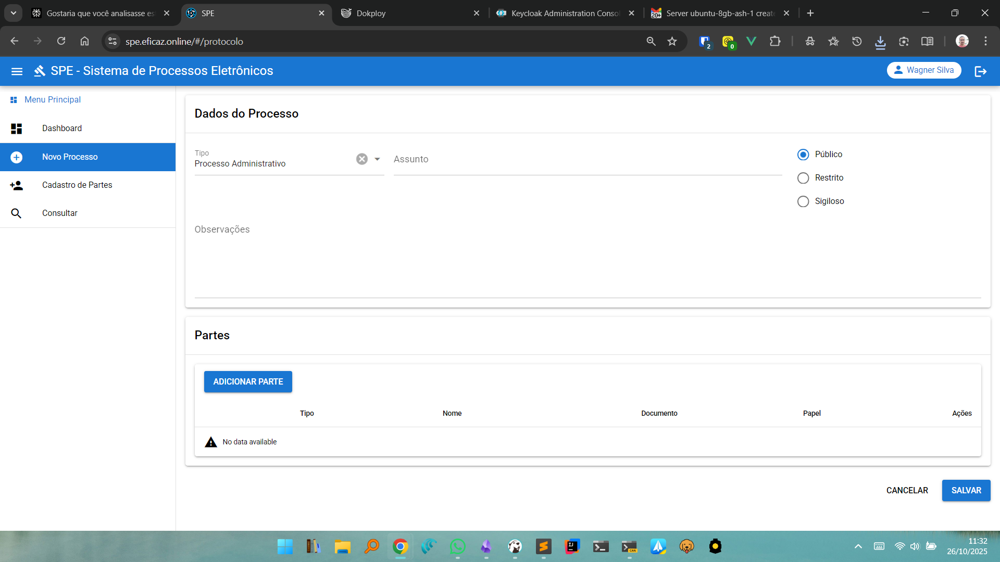
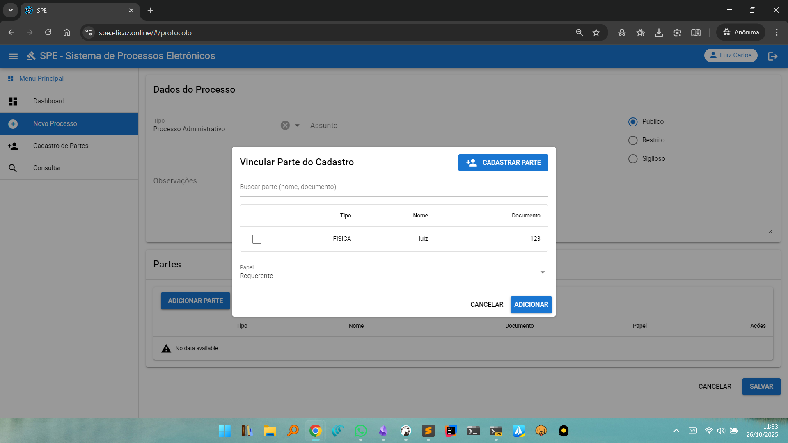
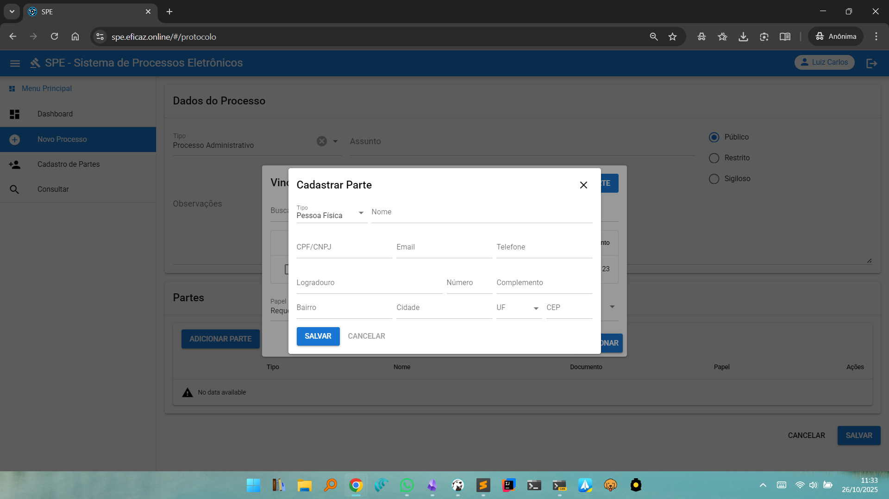

Novo Processo
A funcionalidade Novo Processo permite a criação de novos processos administrativos eletrônicos no SPE. O processo é iniciado com o preenchimento das informações fundamentais, definição do tipo, assunto, nível de acesso, observações e inclusão das partes envolvidas.
Estrutura da Tela de Novo Processo
Dados do Processo

- Tipo: Seleção do tipo de processo (ex: Processo Administrativo).
- Assunto: Campo para inserir ou selecionar o assunto do processo.
- Nível de Acesso: Opções para definir quem poderá visualizar o processo:
- Público
- Restrito
- Sigiloso
- Observações: Espaço para detalhar informações adicionais, justificativas ou observações relevantes ao processo.
- Partes: Seção destinada à inclusão de partes interessadas ou envolvidas no processo.
- Botão Adicionar Parte: Abre uma janela/modal para localizar, selecionar ou cadastrar uma nova parte (pessoa física, jurídica, etc.).
Inclusão de Partes


- Ao pressionar Adicionar Parte, o usuário pode:
- Vincular Parte do Cadastro: Buscar e selecionar partes já cadastradas no sistema por nome ou documento.
- Cadastrar Parte: Caso a parte desejada não esteja cadastrada, é possível abrir um formulário para informar dados detalhados:
- Tipo (Pessoa Física ou Jurídica)
- Nome
- Documento (CPF, CNPJ)
- Contatos (E-mail, telefone)
- Endereço (logradouro, bairro, cidade, UF, CEP)
- Definir o Papel da parte no processo (ex: Requerente, Interessado, Responsável).
Ações Finais
- Após preencher todos os dados e incluir as partes, o usuário deve clicar em Salvar para registrar o novo processo no sistema.
- O botão Cancelar pode ser utilizado para desistir da operação antes da gravação definitiva.
Observações
- O cadastro correto e completo das informações e das partes facilita a tramitação eletrônica, a comunicação de decisões e a rastreabilidade de todas as movimentações futuras.
- A interface oferece busca e cadastro integrado de partes, otimizando o tempo e a qualidade das informações inseridas no processo.
Voltar